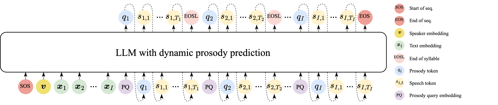
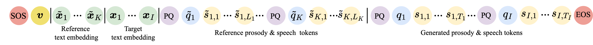

Personalized text-to-speech (TTS) techniques are developed to clone the target speaker in the synthesized speech, imitating both the voice and speaking style. Current LLM-based TTS methods ignore the style-specific prosodic patterns in generated speech, resulting in deficient style learning and thus limiting speaker similarity in synthesized speech. To this end, we investigate the prosody learning conditioned on the synthesized speech, and propose to predict the prosody of the current syllable based on previously predicted speech. Experimental results obtained on three datasets demonstrated the efficacy of the proposed dynamic prosody prediction method in enhancing the prosody learning capability, thereby improving the speaker similarity of the generated speech.
Model Architecture

(a) Overall architecture.

(b) Input and generated sequences in inference.
Fig. 1 Illustration of the LLM architecture integrated with dynamic prosody prediction.
Results
Evaluation was performed on three Chinese datasets, including the emotional speech dataset (ESD), an iFLYTEK internal speech dataset, and the AISHELL-3 test set. Among them, the ESD and the iFLYTEK internal datasets are rich in speaking style, while the AISHELL-3 dataset is flat in prosody. These test sets provided stylistic diversity (ESD and internal) and prosodic neutrality (AISHELL-3) for a comprehensive evaluation.
To examine the effectiveness of the proposed prosody prediction method, three models trained on our 50k dataset were compared, detailed as follows:
CosyVoice(50k): A CosyVoice LLM was trained from scratch on the 50k dataset. It served as the baseline model, which predicted speech tokens without explicit prosody modeling.
CoT: Based on the CosyVoice LLM framework, given the target text and a reference speech combined with its text transcription, the prosody tokens for the entire utterance were generated at the syllable level first. Then the speech tokens for the frames were generated.
Proposed: The method as presented in this paper.
For the following samples, the reference speech and synthesized speech were concatenated, with the reference speech preceding the synthesized speech. The assessment measured the consistency and similarity between the synthesized and reference utterances of three dimensions: voice, speaking style (particularly emotion in the ESD and our internal test sets).
ESD
Reference Text
Target Text
CosyVoice(50k)
CoT
Proposed
还有聊天记录。
我还不知道你认识弗兰克。
这个位置不错，下车。
以后不要喝那么多了，伤身体。
那就一会再说，我好害怕。
你绝对猜不到她准备要孩子了。
这样子比较有趣。
妇女节快乐。我永远爱你，妈妈。
这样你就有时间挥拍打球了。
我也知道自己是大嘴巴。
Internal
Reference Text
Target Text
CosyVoice(50k)
CoT
Proposed
每个模样,也要怎么有脸去接地下的老太太啊。
让他无法用手指抓扯任何物品。
大王,黄飞虎一切都知道了,皇家军兵法武门了。
总是要点缀三两女侠，一二胭脂。
我有孩儿了,我义渠要继承人了。
还是有印度网友对此表示了质疑或担忧。
刚刚收到通知,我们团队的作品获奖了!
他弓着手背悄悄地向苍蝇靠过去。
打算如何处置?关于设定被刺下一眼,要打算如何的论断?
即使聋哑人士，也能以手语交谈。
AISHELL-3
Reference Text
Target Text
CosyVoice(50k)
CoT
Proposed
产销分离就不会彻底
那么这将动摇全世界运动员公平竞赛的基础
济南市旅游景点有什么
变温室温度调至零下八摄氏度
七六零幺七九五五四一七
苏宁电器省家电市场店
威斯康辛州的城市有什么
边缘出演的电视剧有什么
一千一百零七万一千零四十四
弗兰科摩尼利安尼
Finally, the proposed model, which was trained with the 50k dataset, was compared with three open-sourced TTS models trained with large-scale datasets, including CosyVoice and F5-TTS, which lack explicit prosody modeling and Vevo1.5, which adopts explicit modeling via CoT prompting. Specifically, the CosyVoice model was trained on a multilingual corpus totaling 170k hours, including 130k hours of Chinese data. Both the Vevo1.5 and F5-TTS models were trained with 100k hours of the Emilia dataset, comprising 50k hours of Chinese and 50k hours of English speech.